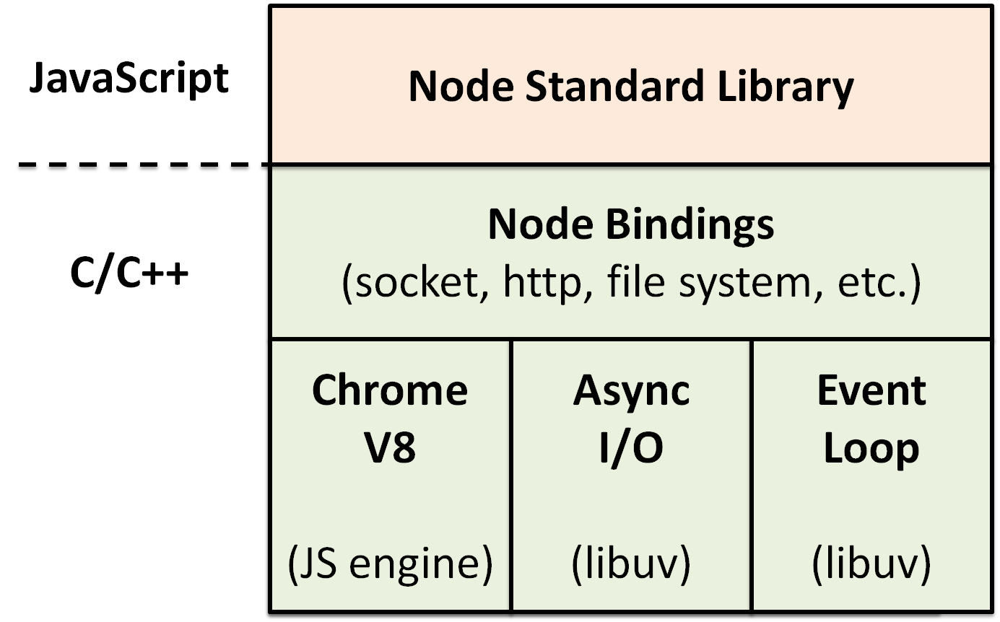

JavaScript模块化简史
—— 俞一腾 2018.07.21
从零开始 —— 无工具篇
假设我们当前没有模块化工具，每个页面一个html文件，每个html文件里有一个js文件。
现在有一个场景:
把一个数组中，序号为偶数的元素变成相应正数
一分钟搞定代码
需求补充，在另一个页面，把一个数组中序号为奇数的元素变成相应正数
要求: 十秒完成
需求再补充，在另一个页面，把一个数组中序号为奇数的元素变成相应负数
“前人是复制粘贴改的，代码也没问题，那我学着改”
很轻松！很简单！编程使我快乐！
但是会有什么问题呢？
三个月后...
需求大改！
- 数组序号是3的倍数的元素改成正数
- 数组序号是5的倍数的元素改成负数
- 既是3的倍数，又是5的倍数的元素，保持不变
怎么办？
现在我们有三份相似代码
- 把一个数组中，序号为偶数的元素变成相应正数
- 把一个数组中，序号为奇数的元素变成相应负数
- 把一个数组中，序号为偶数的元素变成相应负数
而现在需求是
- 数组序号是3的倍数的元素改成正数
- 数组序号是5的倍数的元素改成负数
- 既是3的倍数，又是5的倍数的元素，保持不变
虽然需求改动，但可以抽象出一个结果
遍历一个数组，修改数组中符合要求的元素
抽出代码，分离文件
数组序号是3的倍数的元素改成正数
数组序号是5的倍数的元素改成负数
既是3的倍数，又是5的倍数的元素，保持不变
//operations.js
function abs(num) {
return num >= 0 ? num : - num;
}
function negative(num) {
return num < 0 ? num : - num;
}
//condition.js
function multipleOf(num, base) {
return num % base === 0;
}
//index.html
重构长代码，分离文件的好处
- 增加可读性，抽出的函数名等也有注释功能
- 减少耦合度，修改时可以专注当前函数的功能
- 方便单元测试
总而言之，我们的把目标是：使代码易于修改
问题解决了！
不怕需求按照这个套路来改了！
代码越来越多，但文件的代码一多，就重构分离，还是比较好维护的
直到新入职的小明，写了一个判断数字是否是负数的函数
function negative(num) {
return num < 0;
}
测试没问题！上线后发现，以前的需求坏了！为啥？
命名空间污染
怎么办？
用对象实现命名空间
//operations.js
var Operation = {
abs: function(num) {
return num >= 0 ? num : - num;
},
negative: function(num) {
return num < 0 ? num : - num;
},
//other function
}
减少了命名空间污染
好像可以称之为一个模块了
新需求，如果数组元素值是1024，就不处理，怎么改写？
//operations.js
var Operation = {
reservedValue: 1024,
abs: function(num) {
return num !== this.reservedValue && num >= 0 ? num : - num;
},
negative: function(num) {
return num !== this.reservedValue && num < 0 ? num : - num;
},
//other function
}
但是不希望这个1024能够在console里面被查看，用对象可以实现吗？
JS的对象没有私有变量，不安全
我们需要进一步的模块封装
JS中怎么实现私有变量？
利用作用域，使变量仅能被内部函数访问
var getAdd = function() {
var base = 0;
return function() {
console.log(base++);
}
}
var add = getAdd();
add();
add();
闭包是函数和声明该函数的词法环境的组合 —— MDN
函数getAdd如果仅被一次调用，这个名字就不需要了
var add = (function() {
var base = 0;
return function() {
console.log(base++);
}
})();
add();
add();
IIFE(Immediately-Invoked Function Expression)立即调用函数表达式(或者说“自执行匿名函数”)
结合IIFE
//operations.js
var Operation = (function(){
var reservedValue = 1024;
return {
abs: function(num) {
return num === reservedValue || num >= 0 ? num : - num;
},
negative: function(num) {
return num === reservedValue || num < 0 ? num : - num;
},
//other function
}
})()
保护了私有变量
不过这里的函数abs已经不是取绝对值了，其它地方也要用到，所以我们照例抽离
//mathUtil.js
var MathUtil = (function(){
return {
abs: function(num) {
return num >= 0 ? num : - num;
},
negative: function(num) {
return num < 0 ? num : - num;
},
}
})()
//operation.js要怎么写，才能够调用对象MathUtil？
//operations.js
var Operation = (function(MathUtil){
var reservedValue = 1024;
return {
abs: function(num) {
return num !== reservedValue ? MathUtil.abs(num) : num;
},
negative: function(num) {
return num !== reservedValue ? MathUtil.negative(num) : num;
},
//other function
}
})(MathUtil)
解决了模块依赖问题
当我们开始工程化开发
// other js files
浏览器串行阻塞加载执行(除了使用defer或者async属性的情况)
随着代码规模增加，新的问题出现了
- 我们不希望费劲地控制它们的书写顺序
- 我们希望能够更灵活控制他们的执行顺序
所以进一步的JS模块化需要注意这些问题
- 代码复用（这是自然
- 减少命名空间污染
- 模块封装
- 模块依赖解决方案
- 浏览器环境加载解决方案
LABjs
并行加载，控制执行顺序
但随着文件的增多，顺序维护还是非常麻烦
YUI (Yahoo! User Interface Library)
提供了很多交互组件，包括JS和CSS的资源
YUI2 命名空间式模块
但是长长的名字还是让人很恼火
YUI3 沙箱式模块
只要记得模块的名字就好了
沙箱原理
把用到的模块和其依赖的模块注入沙盒
先添加模块再使用，不用在意顺序了
// YUI seed
// add('module1')
// add('module2')
// add('module3')
太多文件请求了怎么办？ —— YUI Combo
2014年8月29日，宣布停止维护
- 只是为了模块化的话，整个框架太重了
- 同时使用的模块不能有相同名称的方法注入沙箱
- 时代在进步
在项目的很多js文件里
//define(function (require, exports, module) {
var codeHere
//});
这里发生过什么？
(function () {
require('./common/polyfill'); //Polyfill
require('./common/ab_test'); // ABTest
require('./mod/referer'); // mark referer
require('./common/dropdown'); // dropdown
require('./common/header'); // header
})();
require是什么？
require的过程中发生了什么？
为什么要用(function() {})()包起来？
module.exports = {
"init": init,
"get_info": get_info
};
module.exports是什么？
exports.minusCount = minusCount;
exports.addCount = addCount;
exports.init = function () {}
exports又是什么？
import Vue from "vue";
import VueConfig from "base/x.vue.config";
import VueResource from "vue-resource";
import是什么？
export default {
name: 'index-app',
data () {
return {
banners: []
}
},
mixins: [track],
mounted () {
},
components: {...}
}
export又是什么？

不仅仅在浏览器，同样使用在服务器端
是一个模块化标准，不是框架也不是工具，可以有不同的实现
目前是1.1.1版本？
Require & exports
// math.js
exports.add = function(a, b){
return a + b;
}
// main.js
var math = require('math') // ./math in node
console.log(math.add(1, 2)); // 3
自由变量（Free Variable）
1.1.1版本规范NodeJS, 在服务器端运行js
CommonJS标准模块很好用, 在服务器端
但是在浏览器呢?
//CommonJS Syntax
var Employee = require("types/Employee");
function Programmer (){
//do something
}
Programmer.prototype = new Employee();
//如果require是异步的，那么肯定报错
//因为在执行这句前 Employee 模块根本来不及加载进来
//如果是同步的，未免太慢？
AMD && RequireJS
CMD && SeaJS
AMD VS CMD
写法的便利，文件载入的时机
既然单纯的CommonJS标准在浏览器没法实行，那就在服务器端打包(bundle)好了再给服务器
打包的结果说明。 多次import会怎样。
不仅仅是模块化
- watch
- uglify
- sourcemap
- dev-server